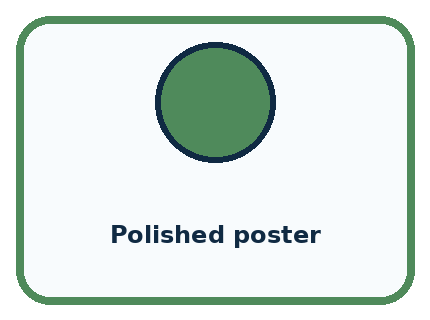
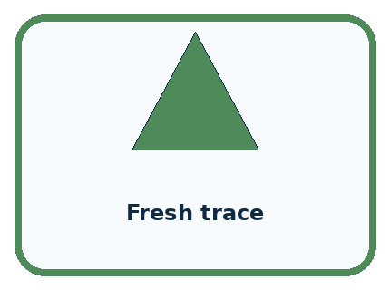
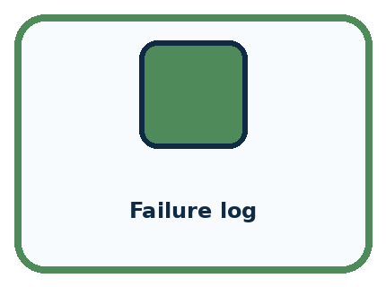

AI Academy · Level 1 · Grade 6 · Week 36 · Student lesson
Expo and Defense
Learn to understand, design, build, test and explain AI systems responsibly.
Project: Helpful Classroom Sorter
THE CONNECTED WEEK
Show the trace. Compare honestly. Defend the limits.
Evaluate the fixed activity adviser, preserve actual evidence and explain what its results support before planning the next step.
Keep one habit: Archive the candidate → record both methods → defend a bounded conclusion.
Main lesson · Section 1
What can your project evidence actually defend?
Explain results, failures and limits rather than relying on presentation polish.
Start with an evidence-based defence
Your strongest defence is an inspectable trace, an honest comparison and a conclusion limited to the evidence. Keep the evaluated instructions unchanged even when a result surprises you.
Recall when a seen case stops being unseen
You change a candidate after seeing a final test fail. Can the same case be an unseen final test of the new version? Explain.
Close your notes first. A rough first answer helps us choose the right starting point; it is not a score for your ability.
After trying, check the relevant lesson or ask your teacher. Change the part of your explanation that the evidence shows was wrong.
Your learning goals
I can evaluate a saved candidate and a manual baseline fairly.
I can defend a conclusion using results, failures and limits.
I can explain the rules, privacy choices and human control in my project.
Earlier wording, alternatives and picture transcripts
Your learning target
Remember before reading
Without opening the old lesson, explain one key idea from Improve One Cause. Give an example and a mistake that the idea helps you avoid.
Without opening the old lesson, explain one key idea from Test Normal Cases. Give an example and a mistake that the idea helps you avoid.
Without opening the old lesson, explain one key idea from Choose Inputs and Outputs. Give an example and a mistake that the idea helps you avoid.
Understanding is shown by explanation, transfer, testing, and limits.

LEARNING TARGET Defend a sorter with 10/12 routine successes and 2/4 mixed-material successes. Report overall and separate results, show one failure and propose a justified next step. What claim would overstate the evidence?
Learner name:
Readiness for the connected explanation
This week’s end goal
By the end, I can defend a project using measured results, limits and an honest baseline comparison.
Main lesson · Section 2
Save the candidate before final inputs are revealed
Evaluate the activity adviser under its existing contract.
Fix the saved version and retain known problems
This week you will evaluate your activity adviser and explain what its evidence supports. A project with an honestly reported failure can show strong understanding.
Save your candidate instructions, version label, input rules, development records and known problems before your teacher reveals the final requests and catalogue. Keep the instructions unchanged during this evaluation.
Read the unchanged input and matching rules
The agreed rule remains: validate whole available minutes from 0 to 30 and Quiet required Yes or No. No allows quiet or nonquiet activities.
Start at the first row and suggest the first activity whose time is no more than available time AND whose quiet label satisfies the request. Explain the choice. If all rows fail, report no match.
Invalid or missing input needs clarification before searching. Clear the previous output for each run.
Use the assigned catalogue as input, not a reason to rewrite instructions
Your teacher will supply a fresh, labelled catalogue in the same format. Its values are test inputs, not permission to rewrite your instructions. All materials are assumed available.
The manual baseline checks every row against the same requirements, then selects the first fit. Both methods advise only; neither books, publishes or chooses on a person’s behalf.
Earlier wording, alternatives and picture transcripts
PICTURE STORY
Look Closely Before You Explain
Pictures give clues; evidence tells us what the clues mean.

MYSTERY A team presents the Classroom Sorter, traces a new item live, shows test evidence, explains one failure, and states when a human must decide.
What do you notice?
Name three visible details without explaining them yet.
Circle the detail most connected to the system's decision.
Name one detail that may be decoration or distraction.
Make a first prediction and state the clue that supports it.
My observations, prediction, and evidence:
GOOD THINKING A prediction can change when stronger evidence appears.
A closer explanation
Main lesson · Section 3
Record both methods before checking the key
Use the same requests, catalogue and full-pass criteria.
Follow the final-evaluation record
From saved version to supported claim
Keep observations separate from the teacher’s expectations
Use the same final requests, catalogue, requirements and full-pass rule for both methods. Record the candidate output and reason before looking at the expected answer.
Record the baseline separately; do not copy the candidate result into it. Your teacher holds the answer key.
A full pass needs both the required output and a valid reason, including why earlier rows fail when a later row is selected.
Record versions, reasons, failures and unrun cases
For each request record its ID, inputs, catalogue label, candidate label, candidate output and reason, baseline output and reason, and both results after checking. Keep a trace for any failure. Mark unrun cases explicitly.
Do not silently correct an observation. If a person misreads an instruction, record that execution error separately from a defect in the written instruction.
Point to the input, the deciding step and the result in this week’s visual. Explain the same step in ordinary words. A picture helps when you can say what each part represents.
Earlier wording, alternatives and picture transcripts
VISUAL MECHANISM
Input → Process → Output
Follow the information instead of imagining magic inside the machine.


INPUT fresh item and documented system
PROCESS execute and explain each stage under questions
OUTPUT result, evidence, limitation, and responsible next action
CORE IDEA Understanding is shown by explanation, transfer, testing, and limits.
UNDER THE HOOD A defense evaluates transferable understanding, not presentation polish.
Strong evidence includes system architecture, version history, planned tests, failures, controlled improvement, fairness/privacy boundaries, and independent response to a novel case.
Draw a fresh example with all three stages:
A closer explanation
Connect the picture and the explanation
Main lesson · Section 4
Compare presentation aids with evidence of understanding
A fresh trace, failure record and human boundary support a claim that a poster alone cannot.
Pictures paired with their evidence


The case to investigate
CASE 1 — Polished poster Clue: communication aid. Meaning: not proof alone.


The case to investigate
CASE 2 — Fresh trace Clue: unrehearsed application. Meaning: transfer evidence.


The case to investigate
CASE 3 — Failure log Clue: honest testing record. Meaning: engineering evidence.

Discuss the confusing pair
Which two pictures are easiest to confuse? What evidence separates them?
Keep the limit in view
BOUNDARY Confidence, decoration, or memorized vocabulary cannot replace a fresh trace and evidence-based answers.
Earlier wording, alternatives and picture transcripts
PICTURE GALLERY
Four Cases, Four Clues
Use the visual cue, then read the evidence carefully.
CASE 1 — Polished poster Clue: communication aid. Meaning: not proof alone.
CASE 2 — Fresh trace Clue: unrehearsed application. Meaning: transfer evidence.
CASE 3 — Failure log Clue: honest testing record. Meaning: engineering evidence.
CASE 4 — Human gate Clue: responsible boundary. Meaning: use condition.
Change one thing in the pictured case
Change: Someone adds the two unrun cases to the denominator as failures.
Prediction: That reports a different measure, 8/12 completed successes out of planned cases.
Reason: It cannot be called the original attempted-case pass rate; distinguish completion from evaluated correctness.
Main lesson · Section 6
Audit the separate exhibition-board comparison
This fictional ten-attempt record differs from the earlier eight-attempt illustration and your actual evaluation.
Read the ten shared attempts and two unrun plans
A fictional paper sorter team prepares an exhibition evidence board.
Both prototype and manual baseline attempt the same 10 reserved cases. Prototype passes 8; baseline passes 9.
Two additional planned cases are unrun. No timing or pupil-satisfaction measures were collected.
Inspect the labelled shared-case pass counts


Trace the result and limited conclusion


Read the picture one step at a time
State what the evidence can and cannot support
An exhibition should make the evidence inspectable. A polished demonstration is not a substitute for the reserved-case record.
The shared cases allow a direct descriptive comparison of pass rates; missing timing data prevents a claim that the prototype is faster. Unrun cases must not be treated as successes.
Read the labelled picture: Write one defensible success statement and one claim the evidence cannot support.
Predict a changed denominator
Before opening the changed-denominator picture, suppose someone reports eight successes out of all twelve planned cases instead of the ten attempted cases. What different measure does 8/12 describe? Why must the two unrun cases remain distinguishable from observed failures?
Check completion versus attempted-case correctness


Keep the classroom-impact limit
This fictional evaluation does not demonstrate classroom learning impact or performance on every future request.
Earlier wording, alternatives and picture transcripts
WORKED EXAMPLE
Watch the Reasoning, Not Just the Answer
Every step connects a claim to observable evidence.

CASE A team presents the Classroom Sorter, traces a new item live, shows test evidence, explains one failure, and states when a human must decide.
STEP 1 — OBSERVE fresh item and documented system
STEP 2 — TRACE execute and explain each stage under questions
STEP 3 — CONCLUDE result, evidence, limitation, and responsible next action
MODEL REASONING A complete defense traces input, process, and output; distinguishes rules from learned parts; presents normal and edge tests; explains one controlled improvement; states privacy, fairness, uncertainty, and human-review boundaries; and handles a fresh case independently.
DO NOT OVERCLAIM Confidence, decoration, or memorized vocabulary cannot replace a fresh trace and evidence-based answers.
What new evidence could change this answer?
A closer explanation
Here is a fictional example from a different project, not your class results. A candidate has 6 full passes from 8 attempted cases; the baseline has 8 from the same 8. Two more planned cases were not run.
The candidate passed 75 percent of attempted cases; the baseline passed 100 percent. Neither has evidence for the two unrun cases. The candidate did not outperform the baseline on this measure.
| Evidence | Supported statement | Claim to avoid |
|---|---|---|
| 6 of 8 full passes | Six attempted cases met the full rule | It works for every request |
| Both methods pass the same cases | They tie on this measured result | Automation must be better |
| A time was not measured | Speed is unknown | The candidate is faster |
| Only fictional catalogue data | Results concern these test conditions | People will enjoy every suggestion |
Explain each failure and its consequence instead of hiding it inside a total. Even perfect results on a small reserved set do not establish reliability in every situation.
Our paper adviser applies human-written rules; it has not learned a model from training examples. It checks compatibility, not enjoyment, popularity or real material availability.
Learn from the worked case
Cover the result before checking it. Say what is given, choose the procedure, and follow one step at a time. Then uncover the result and explain your first mismatch. Ask why a step is allowed, not only what number it produces.
A pictorial worked case: Expo and Defense
The facts we will use


Why this result follows
What this example does not establish
Change one thing: Someone adds the two unrun cases to the denominator as failures. Predict the result before checking the explanation. What remains the same?
Main lesson · Section 7
Archive the result before any later repair
A revised version cannot claim its already-seen cases as unseen evaluation.
Keep evaluated versions and original results
Archive the evaluated candidate and its original results. If you repair it after evaluation, give it a new version label and use revealed cases as development checks. Do not relabel them as unseen.
Ask your teacher for fresh reserved cases only after the revision is fixed. Do not erase the first result.
State a limited conclusion and justified next action
Write one conclusion limited to the actual conditions tested and one specific next step. It may be better to keep the manual baseline. Grade 7 will turn carefully stated procedures into programs and examine data more closely.
Carry forward the habits of validating inputs, recording evidence and keeping people in control.
Connect actual observations, mechanism and authority
Repair both tempting claims
CLAIM A A successful demo proves every case will work.
CLAIM B Admitting a limitation lowers the quality of the project.
STRONG ANSWER FRAME I claim ______ because the evidence shows ______. The process is ______. One limit is ______.
Earlier wording, alternatives and picture transcripts
COMPARE
Same Result, Different Reason
A comparison helps reveal the true concept boundary.
| Case | Evidence | What it shows |
|---|---|---|
| Polished poster | communication aid | not proof alone |
| Fresh trace | unrehearsed application | transfer evidence |
| Failure log | honest testing record | engineering evidence |
| Human gate | responsible boundary | use condition |
Repair two tempting claims
Repair:
Repair:
A closer explanation
Main lesson · Section 8
Practise an evidence defence with human control
Prepare a short explanation supported by your actual records.
Explain the saved rules, trace and any justified repair
Prepare a short explanation using your saved instructions, one complete trace, the final comparison, and a limitation. State the problem and whose choice the adviser supports.
Explain validation, both matching conditions, first-fit order, reset and stopping. Show the exact instruction behind your trace. Describe any repair with its old evidence, or say honestly that no repair was needed.
Keep inputs minimal and suggestions under human choice
Use only fictional requests and the two necessary input fields. Do not collect names, diagnoses or reasons a pupil prefers quiet. A quiet request is enough.
A person may decline the suggestion; a teacher checks real materials and local rules before an activity. A successful output grants no permission to book or publish.
Use the two-minute presentation order
For a two-minute partner presentation, use this order: problem and rule; trace; candidate versus baseline results; failure or limitation; next action. Partners swap speaker and listener roles.
Each person must explain one trace independently. The listener asks which recorded observation supports the main claim; attractive slides cannot substitute for that observation.
Keep the final evaluation record in W2
Use workbook W2 for the connected example “Evaluating and explaining your project”. First fill the input and rule boxes. Try the middle steps before asking for a hint. After a hint, try the next step yourself.
| Plan | Do | Check |
|---|---|---|
| What is given? Which rule or procedure applies? | Record each intermediate step. | Does the result follow? What remains unknown? |
Explain your trace to a partner. Your partner points to one step to check. Swap roles on the next case. Each person writes their own explanation.
Challenge the polish-proves-performance claim
Use the worked case for Evaluating and explaining your project. Proposed explanation: “A polished presentation proves the system works”. Decide whether this explanation is supported.
Point to the step or supplied fact that decides; explain your repair if needed.
Answer on your own before discussion. If you are unsure, say which step you need help with.
Return to the exhibition-board conclusion
Write one defensible success statement and one claim the evidence cannot support.
This is supported practice. Keep the separately named independent case for an attempt before feedback.
Earlier wording, alternatives and picture transcripts
GUIDED PRACTICE
Try It, Check It, Explain It
Use support now so you can succeed independently later.

Explain how the picture story demonstrates this idea: Understanding is shown by explanation, transfer, testing, and limits.
Use a fresh example to explain demonstration.
Trace a new input → process → output example.
Find and repair the error in: Admitting a limitation lowers the quality of the project.
Invent one edge case and name the safe response.
PARTNER CHECK Point to the evidence. Do not accept an answer that only repeats the vocabulary word.
A closer explanation
Practise with less help: Keep the final evaluation record
Check your reasoning
Explain the picture
Main lesson · Section 9
Run the final evaluation and evidence defence
Keep the teacher’s reserved inputs and key separate until the appropriate stage.
Archive, receive inputs and hold the candidate fixed
Final paper evaluation and defence: first archive the complete candidate instructions, label, development records and known limitations. Then receive the teacher’s fresh labelled activity catalogue and requests without the key. Apply the existing whole-minutes 0–30, Yes/No quiet, inclusive time, both-condition and first-fit rules. Use the same assigned data for candidate and manual baseline. Keep the candidate unchanged during the evaluation.
Record actual comparisons and defend a bounded claim
For each assigned case save both methods’ actual outputs, reasons and traces before checking the key. Count full passes out of attempted cases and list unrun cases separately. Present the problem, one actual trace, both methods’ results, a retained failure or limitation and a justified next action; each learner explains a trace independently. If you later repair the candidate, preserve this evaluation and label revealed-case reruns as development evidence for the revision. Do not invent results or claim timing you did not measure.
Keep a normal case and an edge case clearly separated.
Record what happened—even when it does not match your prediction.
Explain the result, one limitation, and the next useful test.
Retain failures, unrun cases and next action
| Case | Prediction | Observed result | What it means |
|---|---|---|---|
| Normal | |||
| Edge |
Before trying: what do I expect, and why? While trying: which step could first go wrong? Afterwards: what did I actually observe, and what should change? Keep “not run” if you only traced the procedure.
Earlier wording, alternatives and picture transcripts
EXPLORER LAB
Responsible Classifier Expo
Predict first, test honestly, and explain what the evidence means.

State your prediction before the result is known.
Complete the task: Demo the system, solve a fresh case, and answer why it may fail.
INDEPENDENCE After support is removed, repeat the proof with a fresh case.
Plan → try → check
Main lesson · Section 14
Try alone: judge the different library adviser
Audit the supplied counts, unsupported claims and meaning of a rerun.
The independent six-case comparison
A fictional library adviser and its manual baseline face the same 6 reserved cases. The candidate has 4 full passes; the baseline has 5. One additional planned case is unrun by both. No speed data was collected.
The team says “ours is faster and more reliable everywhere” and repairs it after seeing the failures. Explain what the counts support, two unsupported claims and how to label a rerun of the revealed cases.
Keep your first attempt
Attempt this case before feedback. Record any help. Earlier examples below are further practice; a case already practised with feedback cannot establish fresh transfer.
Your teacher has the independent answer and scoring criteria. Complete the matching workbook week to keep your practice evidence together.
Use feedback afterwards
Attempt the independent case before hints. Record whether you worked alone, used a hint or followed a model. After feedback, fix the first unsupported step and explain why it changed.
A later check uses a changed case, not a copied answer.
Earlier wording, alternatives and picture transcripts
Independent case: Judge a different project independently
Week 36 Independent application
Close the worked explanation. Apply the idea to this different question without copying.
At the expo, a team says our sorter never fails after testing four cards. Replace the claim with an evidence-based statement and name a next test.
My answer, with a trace, calculation or supporting evidence
Create and test
Change one relevant detail. Predict the result before testing. Include a boundary or missing-information case when it helps reveal a limit.
My changed input and expected result
Connect to your project
Present the final Classroom Sorter portfolio and complete the AI-1 certification defense.
The evidence I will keep
Transfer practice from the original programme
Defend a sorter with 10/12 routine successes and 2/4 mixed-material successes. Report overall and separate results, show one failure and propose a justified next step. What claim would overstate the evidence?
Use feedback to improve
Main lesson · Section 11
Present the earlier sorter portfolio with its own evidence
Keep activity evaluation results distinct from sorter records.
Connect the two project contexts
The connected final sequence evaluates the paper activity adviser. This section assembles the evidence from your earlier Helpful Classroom Sorter portfolio; it does not merge the two projects or require a second final build. Label which project produced each trace and result. An honest limitation or decision to retain the manual method is valid evidence of understanding.
This week’s sorter portfolio
THIS WEEK'S CHECKPOINT Present the final Classroom Sorter portfolio and complete the AI-1 certification defense.
Present the Helpful Classroom Sorter’s versions, test records, baseline, failures and next investigation as an evidence portfolio.
Defend the actual decisions and limits
What real classroom need does this serve?
What information is necessary—and what should stay private?
What happens inside the process?
What normal and edge cases will you test?
When should it say not sure or ask a person?
Use evidence rather than decoration
RESPONSIBLE DESIGN Confidence, decoration, or memorized vocabulary cannot replace a fresh trace and evidence-based answers.
Earlier wording, alternatives and picture transcripts
PROJECT
Helpful Classroom Sorter
Build one coherent system across the year, one evidence-based decision at a time.


My project decision:
Evidence for your project
Main lesson · Section 16
Finish: defend one observation, limit and next step
Close your notes and explain what your own evidence supports.
Your exit explanation
Close your notes. Explain this goal in your own words: Evaluate a saved candidate and a manual baseline fairly
Plan a changed-case return and next-level support
If you are unsure, return to the worked picture and explain one arrow. If you are ready, change an input or assumption and justify your prediction.
Save your workbook evidence. At the next review, try a different case before opening your old answer.
Reference bank and extra practice
Choose the reference that helps your next step.
Your quick word guide
Reference · Section 5
Your quick word guide
Use the words to explain a particular step, record or limit.
Core vocabulary
| Word | Meaning | My example |
|---|---|---|
| demonstration | live showing of system behavior | |
| defense | evidence-based explanation under questions | |
| transfer | applying understanding to a fresh case | |
| limitation | condition where performance or use is restricted |
Terms for the connected explanation
| Word | Meaning |
|---|---|
| Final evaluation | Testing a saved candidate under stated conditions after development |
| Baseline | A comparison method tested under the same conditions |
| Evidence | Recorded observations that support or challenge a claim |
| Defence | An explanation of a decision using evidence and reasoning |
Repair a claim using a word
CLAIM TO REPAIR A successful demo proves every case will work.
Use one vocabulary word and one piece of evidence to repair it:
Earlier wording, alternatives and picture transcripts
VOCABULARY
Words You Can See and Use
The badge is a memory cue; the definition does the real thinking work.


Misconception detective
WORD POWER A strong definition helps you decide something in a new case.
Words used in the closer explanation
Choose a stronger thinking challenge
Reference · Section 10
Choose a stronger thinking challenge
Choose the next useful challenge rather than treating the whole ladder as compulsory.
Pick your next step
RECALL Define demonstration.
EXPLAIN Understanding is shown by explanation, transfer, testing, and limits.
TRACE Show the input, process, and output.
DIAGNOSE Repair: A successful demo proves every case will work.
TRANSFER Apply the idea to a new home or classroom case.
CREATE Design one revealing test.
DEFEND Give a claim, evidence, mechanism, limit, and safe action.
Earlier wording, alternatives and picture transcripts
PRACTICE LADDER
Climb from Recall to Defense
Each step asks for a stronger kind of understanding.

RETRY RULE A coached answer becomes mastery only after you solve a different case independently.
Reference: check your explanation
Reference · Section 12
Reference: check your explanation
Use after practice. Judge a different project independently is the selected independent case.
Check the evidence and its limit
□ Name or draw the fresh case.
□ Trace input, process, and output.
□ State the conclusion and strongest evidence.
□ Name one limit, failure, missing clue, or fairness/privacy concern.
□ Explain one safe next action or improvement.
Record support
My level: □ Not yet □ With one hint □ Independently □ I can teach it
Earlier wording, alternatives and picture transcripts
MASTERY
Checklist for explaining this week’s idea
Use after practice. Judge a different project independently is the selected independent case.

EXPLANATION CHECK Compare the same attempted cases, preserve unrun plans and original evaluations, and support every claim with actual measured evidence.
Independent evidence:
SELF-CHECK A complete defense traces input, process, and output; distinguishes rules from learned parts; presents normal and edge tests; explains one controlled improvement; states privacy, fairness, uncertainty, and human-review boundaries; and handles a fresh case independently.
NEXT BRIDGE Carry today's evidence habit into: the next Academy level.
Extra practice: Defend a claim with a complete trace
Reference · Section 13
Extra practice: Defend a claim with a complete trace
Try the question before opening its worked explanation.
Read the supplied case and question
The expo poster says always correct after six classroom passes.
Write a defensible claim.
Your explanation
Which detail supports the answer, and why does it matter?
Check after trying
Report six specified passes with conditions and limits. Show an input, decision trace, output and test record, including an uncertain case.
| Evidence or stage | Value or result |
|---|---|
| Input | Show a specified test object |
| Decision | Explain its path |
| Output | Show the tray or review result |
| Evidence | Report six classroom passes and limits |
Earlier wording, alternatives and picture transcripts
Week 36 Worked case
Use the supplied details to practise the weekly concept before attempting the independent question. This case extends the illustrated lesson.
The situation
The question
Worked explanation
Explain it in your own words
Trace the supplied case visually
Defend a claim with a complete trace
The expo poster says always correct after six classroom passes.
Write a defensible claim.
Report six specified passes with conditions and limits. Show an input, decision trace, output and test record, including an uncertain case.
Reference: original lesson checklist
Reference · Section 15
Reference: original lesson checklist
Use an additional checklist when it helps inspect your explanation.
Targets and evidence
| By the end, I can | How I will show it |
|---|---|
| Evaluate a saved candidate and a manual baseline fairly | Explain the deciding step, show a trace or test, and state one limit. |
| Defend a conclusion using results, failures and limits | Explain the deciding step, show a trace or test, and state one limit. |
| Explain the rules, privacy choices and human control in your project | Explain the deciding step, show a trace or test, and state one limit. |
Keep your route and first prediction
Remember → watch and explain → try with help → investigate → try independently → keep project evidence. Your teacher may spread this lesson across several classes.
Keep your first prediction. Compare it with what the evidence shows and explain any change.
Earlier wording, alternatives and picture transcripts
Start with this question: A fictional paper sorter team prepares an exhibition evidence board.
Extra practice: pictures, repair and feedback
Reference · Section 17
Extra practice: pictures, repair and feedback
Attempt each question before opening its explanation. Use one browser or paper copy.
First supported question
A fictional paper sorter team prepares an exhibition evidence board.
Which labelled step matches this detail? Prototype did not beat baseline on this measured outcome; explain its failures.
1. Keep incomplete work
2. Describe contract
3. Show results
4. Defend conclusion
Hint if needed: Read the steps in the pictorial case. Match the supplied detail to the stage that performs or records it.
Practice 1: explain the deciding evidence
Check the first explanation
After your attempt, compare with the supported explanation: Defend conclusion Prototype did not beat baseline on this measured outcome; explain its failures. An exhibition should make the evidence inspectable.
A polished demonstration is not a substitute for the reserved-case record. The shared cases allow a direct descriptive comparison of pass rates; missing timing data prevents a claim that the prototype is faster.
Unrun cases must not be treated as successes.
Changed-case question
Changed-case practice: Someone adds the two unrun cases to the denominator as failures. Which conclusion is supported by the supplied facts?
1. We can decide the result without examining the changed input or the procedure.
2. This one example guarantees correct results for every future input.
3. That reports a different measure, 8/12 completed successes out of planned cases.
Hint if needed: Use the changed condition and the deciding step in the pictorial trace. The answer must say what follows from those facts.
Practice 2: explain the deciding evidence
Check the changed case
After your attempt, compare with the supported explanation: That reports a different measure, 8/12 completed successes out of planned cases.
It cannot be called the original attempted-case pass rate; distinguish completion from evaluated correctness.
Repair and save your work
Review Improve One Cause (ai-1/35). Goal: Repair a located defect without changing the agreed requirements. Short practice: Explain why “our repaired version now picks something” is not enough to show success at 6..
Return to this week and explain what you changed.
Review Test Normal Cases (ai-1/33). Goal: Plan routine cases with expected results derived from the requirements. Short practice: Why is none correct for 8 but incorrect for 6? Use both capacity cards..
Return to this week and explain what you changed.
Review Choose Inputs and Outputs (ai-1/30). Goal: Turn the project outcome into precise input and output requirements. Short practice: Trace requests 10 and blank. Why should they not receive the same explanation?.
Return to this week and explain what you changed.
Use Download completed work in the hosted lesson to export your answers, reflections, practice feedback and code-run evidence. Open the HTML copy to read or print it.
Drafts stay in this browser when storage is available; clear drafts on a shared device.
Earlier wording, alternatives and picture transcripts
Use this supported practice once, in the browser or on paper. Keep the reserved independent assessment for a separate first attempt before teacher feedback.
Repair a missing building block
Keep your completed work
Reference: the six-picture journey
Reference · Section 18
Reference: the six-picture journey
Revisit the picture that serves the current question; key diagrams already sit beside the main explanation.
01. Expo and Defense: the case


A fictional paper sorter team prepares an exhibition evidence board. Supplied facts: Both prototype and manual baseline attempt the same 10 reserved cases. Prototype passes 8; baseline passes 9.
Two additional planned cases are unrun. No timing or pupil-satisfaction measures were collected.
Point to the given fact that matters most. Explain why it matters.
02. Follow the deciding steps
Describe contract: Show the task, inputs, rule and reserved case selection. → Show results: Prototype 8/10=80%; baseline 9/10=90% on attempted cases. → Keep incomplete work: Two unrun cases remain visible, without pass/fail labels. → Defend conclusion: Prototype did not beat baseline on this measured outcome; explain its failures.
Point to each numbered stage and explain which recorded input it uses.
03. Shared reserved-case comparison
Shared reserved-case comparison. Units: passes out of 10 attempted. Prototype: 8. Manual baseline: 9.
Read the labels and values. Explain the relationship the model shows.
04. Change one thing. Trace what follows.
Original case: Prototype did not beat baseline on this measured outcome; explain its failures. Changed condition: Someone adds the two unrun cases to the denominator as failures.
Expected result: That reports a different measure, 8/12 completed successes out of planned cases. Reason: It cannot be called the original attempted-case pass rate; distinguish completion from evaluated correctness.
Predict before checking the worked changed-case result. Name what changed and what the supplied facts allow you to conclude.
05. Connect the explanation to its limit


An exhibition should make the evidence inspectable. A polished demonstration is not a substitute for the reserved-case record.
The shared cases allow a direct descriptive comparison of pass rates; missing timing data prevents a claim that the prototype is faster. Unrun cases must not be treated as successes.
Limit: This fictional evaluation does not demonstrate classroom learning impact or performance on every future request.
Explain the case, then point to a limit on the claim.
06. Make the idea visible in your project


Present the Helpful Classroom Sorter’s versions, test records, baseline, failures and next investigation as an evidence portfolio. Draw your input, deciding step, result and limit.
Supported question: Write one defensible success statement and one claim the evidence cannot support.
Draw your project trace and justify the deciding step using evidence.